One prediction traced through the pipeline. Radar fixes the global geometry, diffusion sharpens boundaries and corrects metric detail, and the visual guidance adapter recovers objects that neither stage could place on its own.
Dense 3D depth perception fails under smoke, fog, and darkness because optical sensors cannot penetrate airborne particulates. mmWave radar operates reliably in these conditions but its limited angular resolution produces depth that is metrically grounded yet structurally incomplete.
We present GRADE, a system that grounds pretrained generative priors in single-frame radar geometry for high-fidelity metric depth under visual degradation, without SAR and without a reliable camera. A radar depth module translates raw 4D radar spectra into coarse metric depth; a diffusion refinement module conditions a pretrained latent diffusion backbone on this estimate, recovering structural detail through learned world priors while remaining anchored to the radar's geometry; and a pixel-space visual guidance adapter extracts residual camera cues when available and is trained across clear, smoke-degraded, and occluded inputs so the full output approaches the radar-conditioned path as visibility degrades.
Trained and evaluated on approximately 95K synchronized frames across 12 buildings with real smoke using leave-building-out splits, GRADE achieves an MAE of 0.303 m in clear conditions and 0.313 m under smoke, outperforming all baselines across every metric.
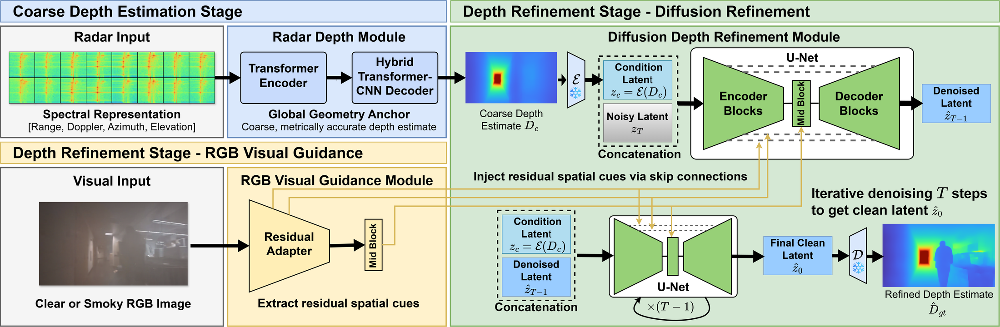
GRADE is a three-module pipeline that runs in two stages. In Stage 1, the Radar Depth Module maps a 4D radar spectrum (range, Doppler, azimuth, elevation) to a coarse but metrically accurate depth image with a transformer encoder and a hybrid transformer-CNN decoder, bridging the RF-to-vision domain gap. In Stage 2, the Diffusion Depth Refinement Module encodes that coarse depth into a condition latent and concatenates it with the noisy latent at every denoising step of a pretrained latent diffusion U-Net, so the generative prior adds structure without drifting off the measured geometry. Running in parallel, the RGB Visual Guidance Module extracts residual spatial cues from the camera through a ControlNet-style adapter and injects them via zero-initialized skip connections.
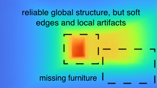
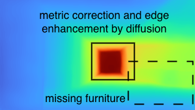
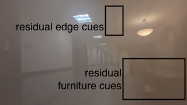
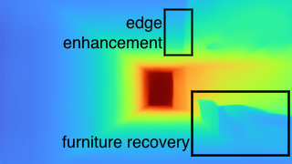
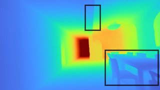
One prediction traced through the pipeline. Radar fixes the global geometry, diffusion sharpens boundaries and corrects metric detail, and the visual guidance adapter recovers objects that neither stage could place on its own.
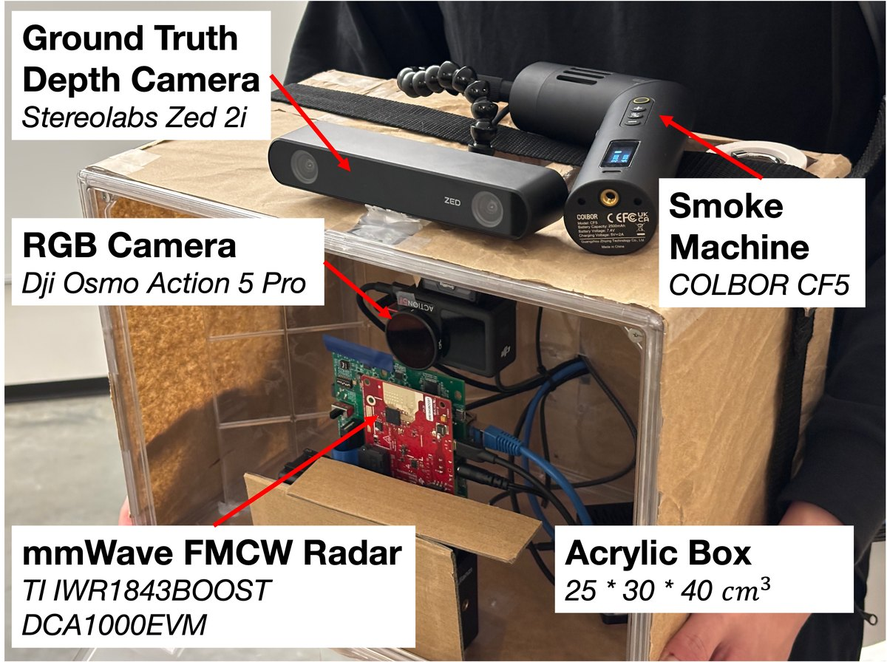
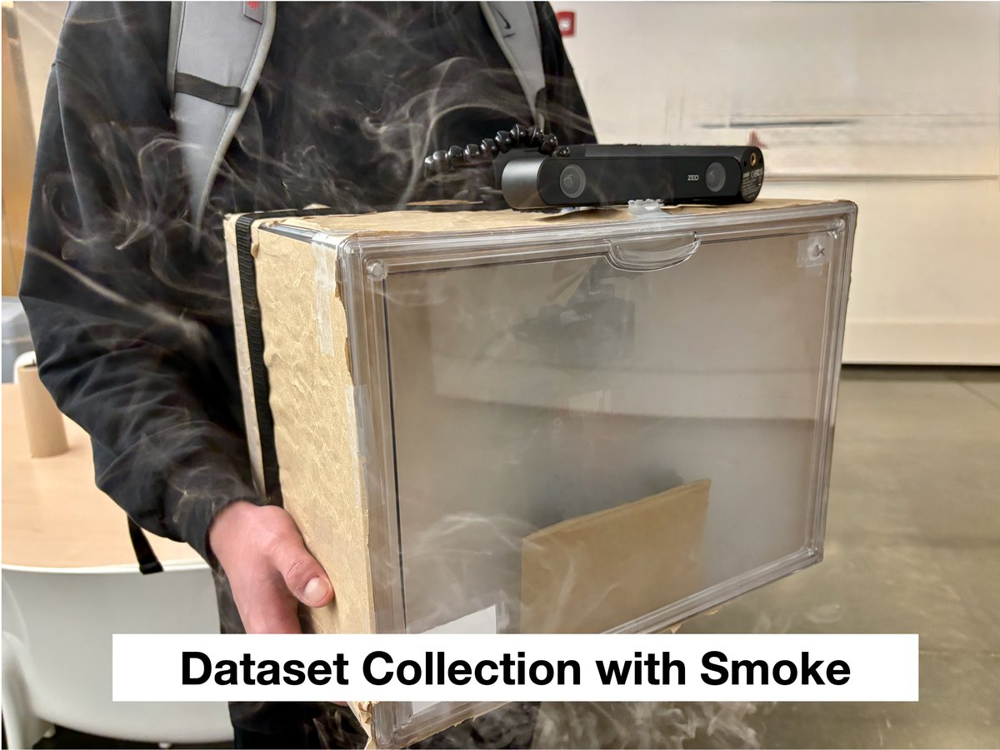
Data is collected with a handheld rig: a 77 GHz TI IWR1843BOOST + DCA1000EVM for raw radar I/Q at 10 Hz, a DJI Osmo Action 5 Pro inside a transparent acrylic enclosure for smoke-degraded RGB, and a Stereolabs ZED 2i outside the enclosure for reference RGB and ground-truth depth. Because the smoke is confined to the enclosure, the reference depth stays independent of smoke density. A MAX30105 IR particle sensor logs smoke density so results can be stratified by visibility.
Median metrics on the building-disjoint test set. The smoke rows pool medium and heavy smoke (IR ≥ 2000). GRADE is best on every metric in both conditions.
| Method | MAE (m) ↓ | SSIM ↑ | LPIPS ↓ | CD (m2) ↓ | MHD (m) ↓ |
|---|---|---|---|---|---|
| Clear | |||||
| DA3 | 0.500 | 0.932 | 0.159 | 0.196 | 0.233 |
| CaFNet (No-Smoke) | 0.421 | 0.944 | 0.174 | 0.171 | 0.211 |
| CaFNet | 0.417 | 0.945 | 0.160 | 0.174 | 0.210 |
| GRT | 0.434 | 0.902 | 0.440 | 0.242 | 0.209 |
| GRT+Image | 0.415 | 0.881 | 0.450 | 0.153 | 0.192 |
| RadarCam-Depth | 0.489 | 0.938 | 0.164 | 0.264 | 0.262 |
| GRADE (Ours) | 0.303 | 0.960 | 0.126 | 0.120 | 0.164 |
| Smoke | |||||
| DA3 | 1.255 | 0.801 | 0.307 | 4.407 | 1.325 |
| CaFNet (No-Smoke) | 0.980 | 0.863 | 0.287 | 1.641 | 0.687 |
| CaFNet | 0.949 | 0.865 | 0.282 | 1.846 | 0.700 |
| GRT | 0.436 | 0.901 | 0.444 | 0.208 | 0.203 |
| GRT+Image | 0.418 | 0.884 | 0.450 | 0.146 | 0.192 |
| RadarCam-Depth | 0.676 | 0.916 | 0.211 | 0.603 | 0.424 |
| GRADE (Ours) | 0.313 | 0.959 | 0.137 | 0.114 | 0.167 |
The baselines separate along modality. DA3 and both CaFNet variants collapse under smoke, and training CaFNet on smoke does not close the gap, so the failure is architectural rather than a data-coverage issue. RadarCam-Depth degrades more gently because radar supplies its metric scale. GRT is nearly visibility-invariant in MAE but never drops below 0.44 LPIPS. GRADE combines the stability of the radar baselines with lower LPIPS than every baseline in both conditions, and its median MAE changes by only 3.3% from clear to smoke.
Representative predictions from clear through heavy-smoke scenes, ordered by increasing degradation.
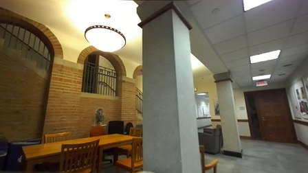
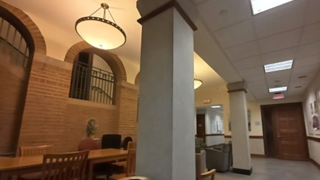
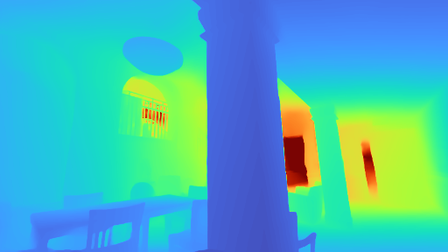
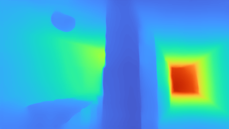
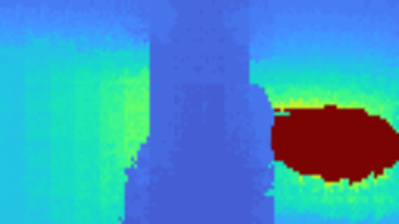
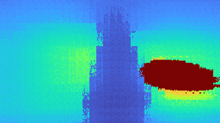
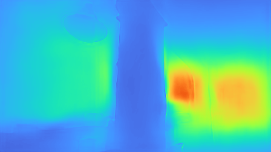
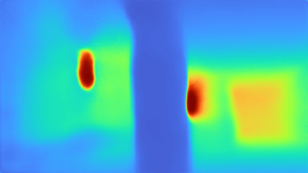
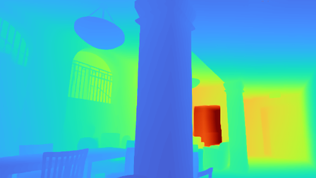
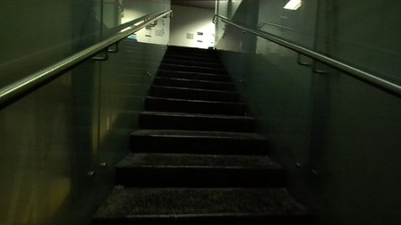
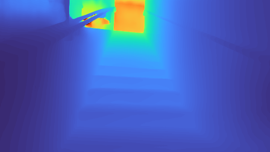
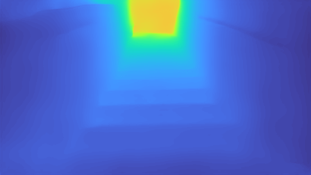
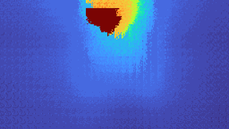
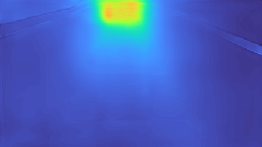
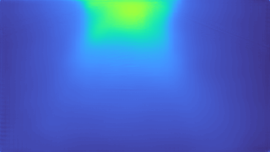
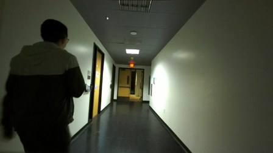
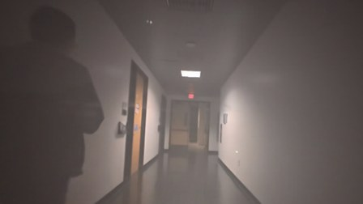
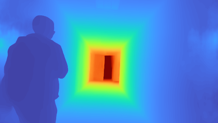
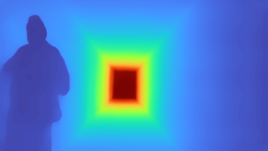
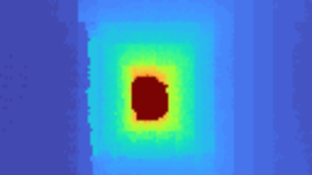
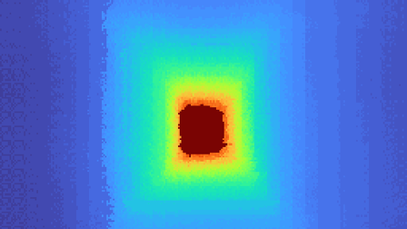
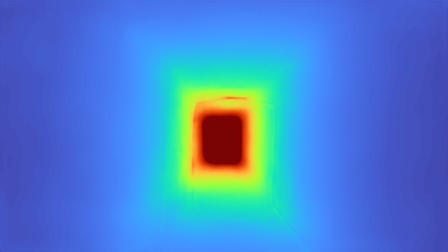
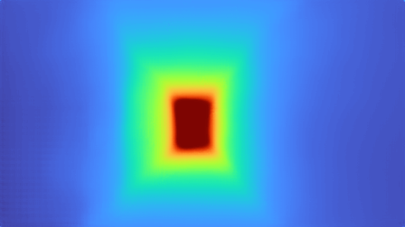
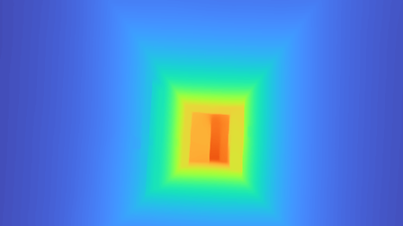
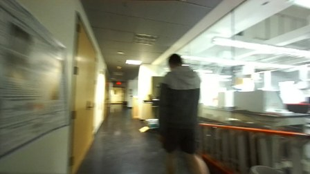
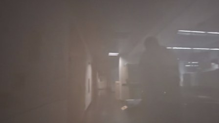
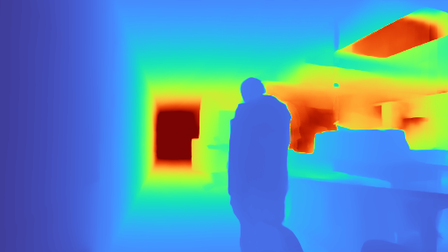
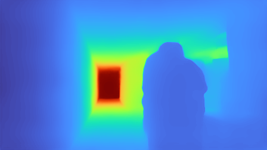
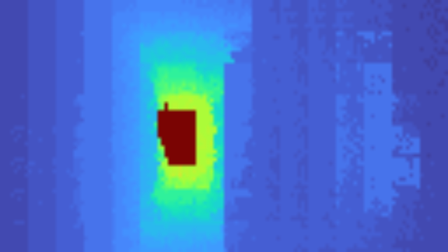
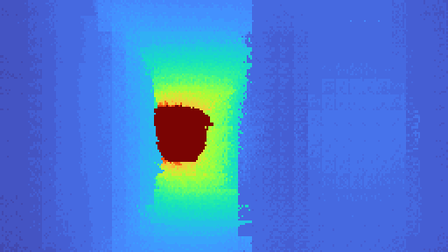
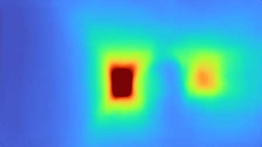
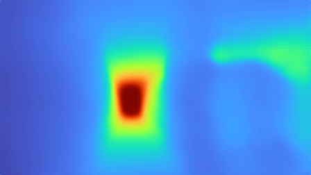
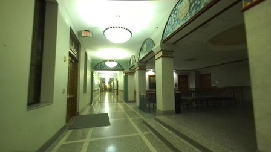
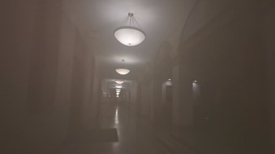
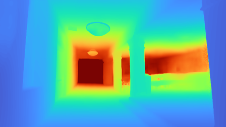
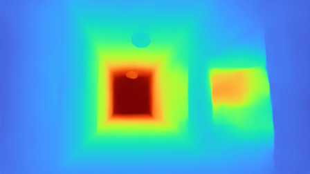
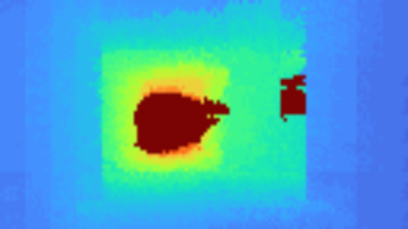
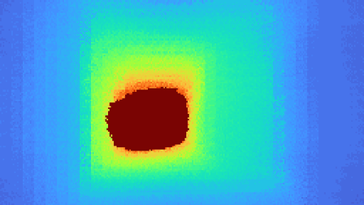
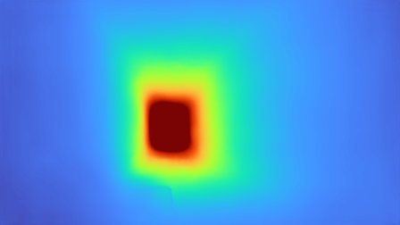
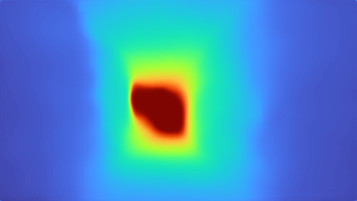
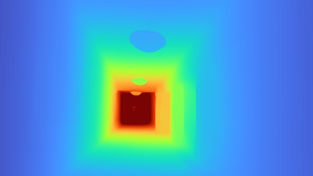
The RGB reference column is shot from outside the smoke enclosure; the input RGB column is what the system actually sees. GRADE preserves the major surfaces, people, stairs, and furniture boundaries visible in the reference depth, while camera-dependent baselines lose the scene entirely in the heavy-smoke rows.
Empirical CDFs over the whole test set, showing that the median results are not driven by a small subset of frames.
Under smoke, DA3 and CaFNet develop long high-error tails in MAE, CD, and MHD. GRADE stays shifted toward lower error and higher SSIM across the distribution.
| Method | MAE (m) ↓ | SSIM ↑ | LPIPS ↓ | CD (m2) ↓ | MHD (m) ↓ |
|---|---|---|---|---|---|
| Light smoke | |||||
| DA3 | 0.548 | 0.932 | 0.165 | 0.290 | 0.295 |
| CaFNet (No-Smoke) | 0.549 | 0.929 | 0.190 | 0.311 | 0.293 |
| CaFNet | 0.508 | 0.935 | 0.181 | 0.278 | 0.277 |
| GRT | 0.442 | 0.899 | 0.449 | 0.233 | 0.211 |
| GRT+Image | 0.415 | 0.882 | 0.453 | 0.152 | 0.196 |
| RadarCam-Depth | 0.513 | 0.937 | 0.171 | 0.332 | 0.303 |
| GRADE (Ours) | 0.295 | 0.962 | 0.122 | 0.107 | 0.160 |
| Medium smoke | |||||
| DA3 | 0.857 | 0.890 | 0.256 | 1.837 | 0.735 |
| CaFNet (No-Smoke) | 0.876 | 0.882 | 0.272 | 0.929 | 0.529 |
| CaFNet | 0.810 | 0.891 | 0.262 | 0.987 | 0.532 |
| GRT | 0.455 | 0.897 | 0.448 | 0.230 | 0.212 |
| GRT+Image | 0.424 | 0.880 | 0.457 | 0.151 | 0.195 |
| RadarCam-Depth | 0.649 | 0.919 | 0.211 | 0.545 | 0.402 |
| GRADE (Ours) | 0.318 | 0.958 | 0.142 | 0.120 | 0.170 |
| Heavy smoke | |||||
| DA3 | 1.751 | 0.625 | 0.385 | 7.796 | 1.970 |
| CaFNet (No-Smoke) | 1.229 | 0.821 | 0.313 | 3.164 | 0.985 |
| CaFNet | 1.292 | 0.794 | 0.322 | 3.503 | 1.053 |
| GRT | 0.404 | 0.907 | 0.437 | 0.173 | 0.189 |
| GRT+Image | 0.404 | 0.889 | 0.442 | 0.137 | 0.187 |
| RadarCam-Depth | 0.726 | 0.909 | 0.210 | 0.703 | 0.468 |
| GRADE (Ours) | 0.304 | 0.962 | 0.129 | 0.104 | 0.161 |
GRADE is best on every metric in each stratum and changes little from light to heavy smoke, while the camera-dependent baselines climb steeply.
Pooled test set across all visibility conditions.
| Variant | MAE (m) ↓ | SSIM ↑ | LPIPS ↓ | CD (m2) ↓ | MHD (m) ↓ | GE ↓ |
|---|---|---|---|---|---|---|
| Ours_radar | 0.320 | 0.958 | 0.147 | 0.132 | 0.172 | 0.0035 |
| Ours_diffusion | 0.360 | 0.954 | 0.154 | 0.167 | 0.197 | 0.0027 |
| Ours_full | 0.308 | 0.959 | 0.133 | 0.116 | 0.166 | 0.0026 |
| GRT_Refine (Frozen) | 0.450 | 0.939 | 0.182 | 0.230 | 0.243 | 0.0034 |
| GRT_Refine (Retrain) | 0.433 | 0.946 | 0.173 | 0.248 | 0.244 | 0.0028 |
A pretrained diffusion prior does not improve the radar estimate on its own: Ours_diffusion sharpens boundaries (GE falls from 0.0035 to 0.0027) but worsens MAE, LPIPS, CD, and MHD, because the prior can place plausible structure in the wrong location. Adding visual guidance gives Ours_full, best on all six metrics. Swapping our Stage 1 for GRT stays behind on every metric even after the refinement stage is retrained on GRT outputs.
ΔMAE between GRADE and its radar-only module against measured smoke density. Negative values through light and medium smoke show the adapter using the visual cues that remain. As visibility collapses, ΔMAE approaches zero rather than growing, so the full model falls back toward the radar-conditioned estimate instead of being dragged down by an uninformative image.
@inproceedings{zhao2026grade,
title = {GRADE: Single-Frame Generative Radar Depth Estimation Under Visual Degradation},
author = {Zhao, Bin and Chiou, Patrick and Garg, Nakul},
booktitle = {Proceedings of the 32nd Annual International Conference on
Mobile Computing and Networking (MobiCom '26)},
year = {2026},
doi = {10.1145/3795866.3844478}
}